Name: Su Chuanzhou
UID: 3036837980
The walking and running clips are 60 fps BVH. Positions are interpolated linearly and rotations with spherical linear interpolation. Two clips are joined by searching for a compatible pair of frames, aligning the root, and bridging the gap. Real-time control uses a five-feature motion match on the long walking clip plus the push clip.
A key is kept every time_step frames. Between two keys the function returns t = target_step − 1 frames that include the left key and exclude the right key, so the next segment can start on that right key without repeating it. For a position channel the sample at fraction i / t is
p(i) = pleft + (pright − pleft) · (i / t).
Rotations are quaternions in (x, y, z, w). Each joint is interpolated with scipy.spatial.transform.Slerp on times linspace(0, 1, t+1), and the final sample is dropped because it is exactly the right key. Before building the slerp I flip the sign of the right quaternion when its dot product with the left one is negative, so the interpolation takes the short arc. A 0° to 90° yaw then passes through 22.5°, 45° and 67.5°, and a 10° to 350° pair passes through 0° rather than the long way around.
The supplied calls keep a key every 10 source frames and vary how many frames are generated for that same interval. One source interval of 10 frames is represented by target_step − 1 output frames, so the speed relative to the original clip is 10 / (target_step − 1). The original span here is the 180 frames from the first key to the last, which is 3.0 s.
| time_step | target_step | Output frames | Playback | Speed |
|---|---|---|---|---|
| 10 | 5 | 72 | 1.2 s | 2.50× |
| 10 | 10 | 162 | 2.7 s | 1.11× |
| 10 | 20 | 342 | 5.7 s | 0.53× |
| 10 | 30 | 522 | 8.7 s | 0.34× |
Table 1. Retiming the same walking keys. target_step = 10 is just faster than the source because the right key is not duplicated.
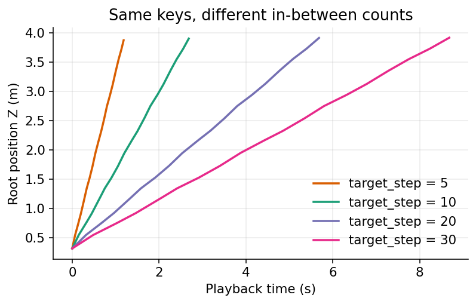
Figure 1. Root travel along Z. A larger target_step stretches the same path over more time. The path itself does not change, because every setting interpolates the same pairs of keys.
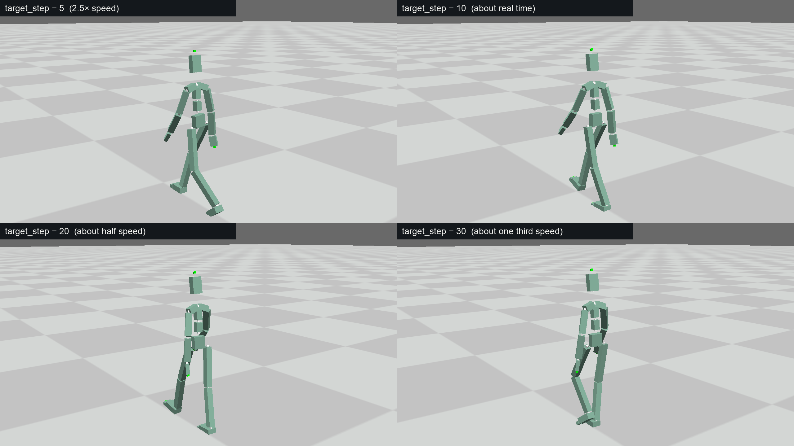
Figure 2. The pose at 1.0 s of playback. At 2.5× the cycle is nearly finished. At one third speed the character has only just left the first step. This is the same motion played at four rates, which is what changing target_step actually does.
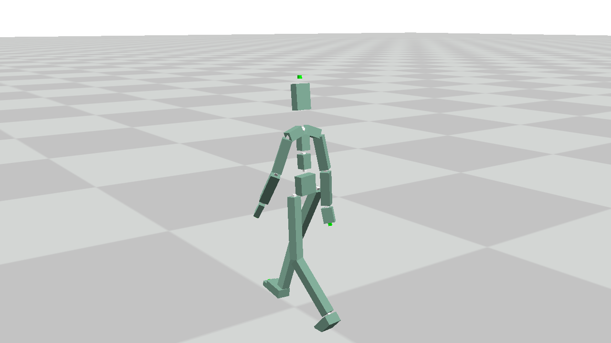
Figure 3. Walking pose from time_step = 10, target_step = 10, near the middle of the retimed clip.
Changing target_step only changes speed. Changing time_step changes the pose the interpolation is allowed to invent. I measured that by slerping each pair of keys to the halfway sample and comparing it with the original frame that actually sits halfway between those keys. The number is the mean joint angle.
| Key interval | 5 | 10 | 20 | 40 |
|---|---|---|---|---|
| Midpoint error | 0.8° | 1.9° | 4.6° | 9.1° |
Table 2. Mean joint error of the slerp midpoint against the original in-between pose.
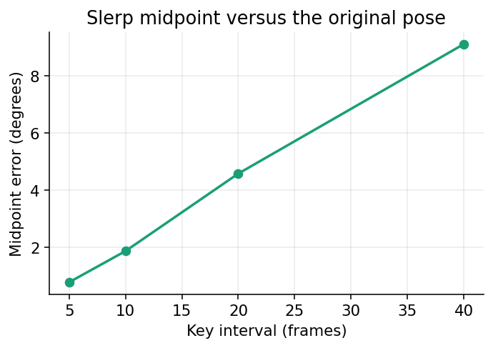
Figure 4. The error grows roughly with the key interval. Ten frames, about 170 ms at 60 fps, stays under 2°. Forty frames is a large fraction of a step and the straight arc on the quaternion sphere misses the real knee and ankle path.
For a clean result I would keep keys near 8–12 frames on this 60 fps walk: close enough that the midpoint is still the captured pose, and sparse enough that the clip is actually being compressed. Sparser keys do not just look softer. They leave the motion manifold, so the feet skate and the limb lengths, while formally preserved by the local offsets, no longer pass through the captured contact.
The two clips do not meet. A direct splice of walk frame 40 onto run frame 0 teleports the root by 6.52 m, and the run faces about 52° away from the walk (walk yaw −4°, run yaw +48° at the frames the search eventually picks). The pipeline has five steps.
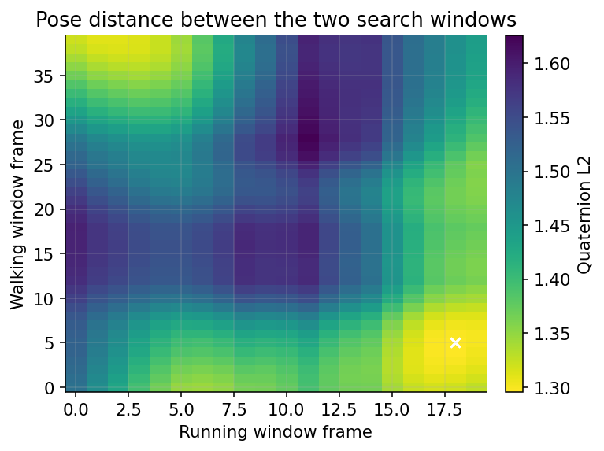
Figure 5. Pose distance inside the two windows. The white cross is the minimum, at walk frame 25 and run frame 18. The cost changes smoothly across the gait, which is what a cyclic walk against a short run should look like.
After the alignment both blend endpoints have the same root position, so a plain lerp holds the character still for the whole bridge and then the run starts at full speed. That is the “on the fly” freeze: the pose morphs in place. I replace the root samples with a cubic Hermite curve whose end velocities are the walk’s incoming root velocity and the run’s outgoing root velocity, and I shift the rest of the run by the same hand-off so there is no snap when the captured run resumes. With 8 in-between frames the root travels 0.21 m in 0.13 s, about 1.6 m/s, which sits between the walk (1.2 m/s) and the run (2.7 m/s) instead of dropping to zero.
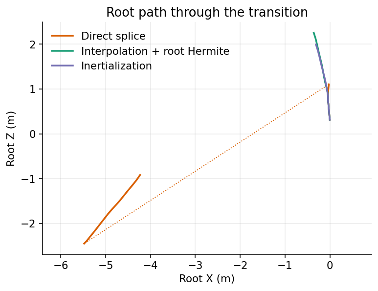
Figure 6. Root path on the ground plane. The direct splice jumps across the scene. Both edited transitions leave the walk along one continuous path and head off in the walk’s direction rather than the run’s original heading.
The pose has to cover 19° of mean joint rotation during the bridge. If that happens in two frames, the fastest joint moves 46° in one frame. The source clips themselves never move a joint faster than 9.8° per frame. I take the shortest bridge whose fastest joint stays at or below that source maximum. That lands on 12 frames (0.20 s, 7.6°/frame). Eight frames, the value in the starter, is slightly snappier at 11.4°/frame and is what the concatenation video shows; twelve is the one I would ship.
Making the bridge much longer does not keep helping. At 45 frames the joint step is only 2°/frame, but the character spends 0.75 s on a pose that was never captured, and the root has been carried 1.4 m by the Hermite curve while the feet are a blend. The motion reads as skating. The length should be set by the pose gap and the fastest joint the clip already contains, not by a fixed constant.
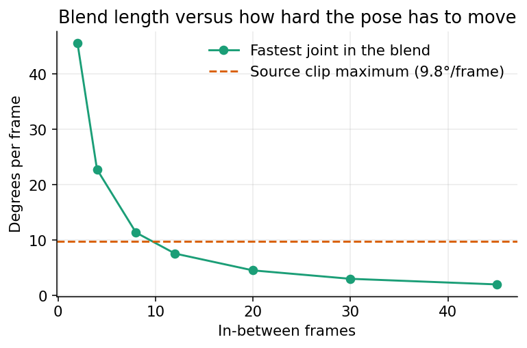
Figure 7. Fastest joint during the bridge. The dashed line is the fastest joint step in the source clips. The curves meet between 8 and 12 frames.
| In-betweens | Duration | Root travel | Fastest joint |
|---|---|---|---|
| 2 | 0.03 s | 0.03 m | 45.6°/frame |
| 8 | 0.13 s | 0.21 m | 11.4°/frame |
| 12 | 0.20 s | 0.34 m | 7.6°/frame |
| 30 | 0.50 s | 0.92 m | 3.0°/frame |
| 45 | 0.75 s | 1.40 m | 2.0°/frame |
Table 3. A longer blend is gentler per frame and worse as a piece of motion, because more of the travel happens off the captured clips.
The better fix for a large gap is to stop inventing poses. Inertialization plays the run immediately. At the cut it stores the position offset and the velocity offset, and the rotation offset as a rotation vector, then decays both with the same critically damped spring the controller already uses. The half-life is the requested bridge length, 8/60 s here. The first output frame is exactly the walk pose, and a few tenths of a second later the correction is gone and the frames are the captured run, including its real foot contacts. There is no interval in which the body is a mixture of the two clips. The concatenation video shows this after the interpolated version. The interpolated bridge is what the five graded steps ask for; inertialization is what I would use when the pose distance or the speed change gets larger than it is on this pair.
The database is motion_walking_long.bvh (15,679 frames) and push.bvh (200 frames). Features are expressed in the character frame and divided by their own standard deviation, so a weight is a real importance and not a unit conversion. The controller already predicts the future root at +20, +40 and +60 frames, because its future samples are 20 simulation steps apart and the query reads samples 1, 2 and 3. I left that horizon in place so the database and the stick are on the same clock.
I compared feature sets by taking 388 walking frames, rotating the desired future path by 60°, and searching. Turn error is the median angle between the requested future displacement and the future displacement of the matched frame. Foot jump is the median distance between the query feet and the matched feet. A set that ignores the path reports the original frame, so its turn error stays at 60° and its foot jump stays at 0. That is a continuity success and a control failure.
| Feature set | Count | Turn error | Foot jump | Foot-velocity jump |
|---|---|---|---|---|
| Future path and facing only | 2 | 9.5° | 0.50 m | 3.50 |
| Foot positions | 2 | 60° | 0 | 0 |
| Feet and hands | 4 | 60° | 0 | 0 |
| Foot position and velocity | 4 | 60° | 0 | 0 |
| Feet, foot velocity, future path | 5 | 17.0° | 0.22 m | 0.67 |
| Above, plus future facing | 6 | 17.1° | 0.29 m | 0.94 |
| Above, plus hip velocity | 7 | 16.6° | 0.28 m | 0.93 |
Table 4. A 60° turn request. The five-feature row is the set in task2_motion_matching.py. Weights are 0.75, 0.75, 1, 1, 1 after per-dimension normalization.
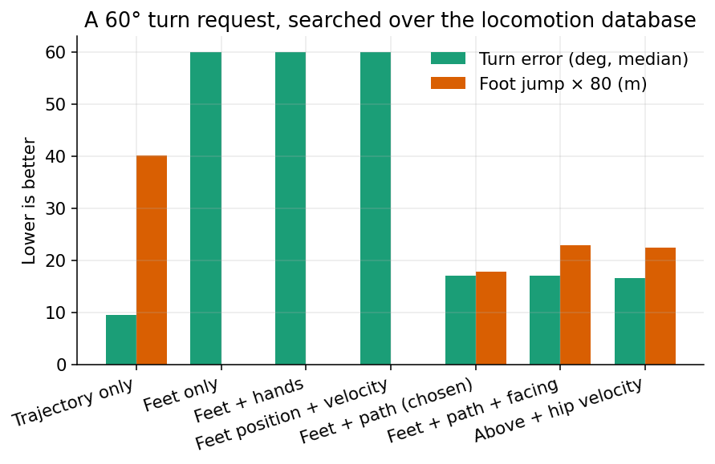
Figure 8. The same comparison. Feet alone never turn. The path alone turns and swaps the feet. Five features is the first set that does both.
Hands do not belong in a locomotion query. The stick never asks for an arm pose, and an arm channel spends distance on something the player cannot control. Hip position is a poor extra signal for another reason: in the starter, lHipPos reads rHip and rHipPos reads lHip, and the same swap is in the hip rotation and velocity branches. I did not select those channels. Hip velocity on the root, which is wired correctly, changes the turn error by less than half a degree and makes the foot match worse, so it is not worth a sixth or seventh variable.
Future facing looks like it should matter, and it does not, once the future position is already in the query. The turn error stays at 17° and the foot jump rises from 0.22 m to 0.29 m. The controller writes the desired root rotation into the pose on every frame anyway, so facing is already enforced downstream. Paying for it again in the search pulls the match toward a heading and away from the feet.
Foot velocity is the channel that keeps a planted foot from matching a foot that is only passing through the same point. Position alone plus the path has a similar turn error in a separate check, but the foot-velocity jump roughly triples. After normalization I weight positions at 0.75 and velocity and the path at 1. Dropping the path weight toward 0.75 makes the turn sluggish (median error back above 20°). Raising it toward 2.0 gets the turn error down near 10° and pushes the foot jump back toward the trajectory-only failure. Equal weight at 1.0 on the path is the balance I kept.
I rebuilt only the trajectory channels at four horizons and repeated the 60° test with the same five-feature weights. The controller cannot use a horizon other than 20/40/60 without also changing the samples it sends, so this is a check that the locked horizon is a good one, not a second system.
| Future frames | Time | Turn error | Foot jump |
|---|---|---|---|
| 10, 20, 30 | 0.17–0.50 s | 20.4° | 0.23 m |
| 20, 40, 60 | 0.33–1.00 s | 17.1° | 0.22 m |
| 30, 60, 90 | 0.50–1.50 s | 16.7° | 0.18 m |
| 40, 80, 120 | 0.67–2.00 s | 21.4° | 0.18 m |
Table 5. Horizon of the future path, with the database and the synthetic query using the same three times.
A third of a second is too short: the turn has barely started, so many straight frames still look plausible and the error goes back up to 20°. Two seconds is too long: the database’s continuation has often finished the turn and straightened out, so it no longer matches a turn the player is in the middle of requesting. 20/40/60 and 30/60/90 are almost the same quality. I keep 20/40/60 because it is the horizon the controller actually emits. Using 30/60/90 in the database while the stick still sent 20/40/60 would compare a 0.33 s wish with a 0.50 s memory, which is a worse system than either row of the table.
On a scripted path (straight, left turn, straight, right turn, stop) the five-feature matcher stays on the walking clip, follows the commanded heading, and holds still when the stick is released. The median step in the matched frame index is 1, so most of the time it simply plays the clip forward. About 3% of frames jump by more than 30 frames, which is the search waking up when the request changes. The runtime inertialization, with a 0.05 s half-life, is what hides that jump. The search’s job is to make the jump small enough that a short decay can absorb it. That is another reason not to add channels: every extra normalized dimension can tip a close foot match over to a far one, and the spring then has a bigger offset to hide.
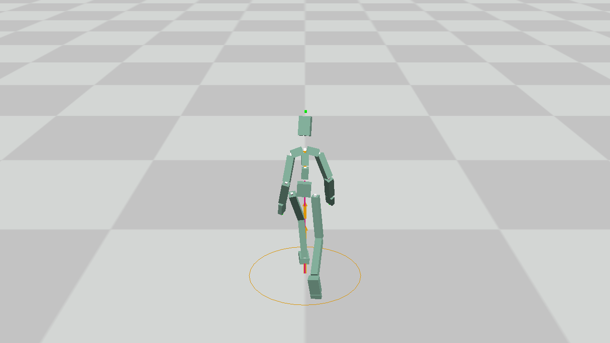
Figure 9. Walking forward. The circle and arrow are the controller’s current position and predicted path.
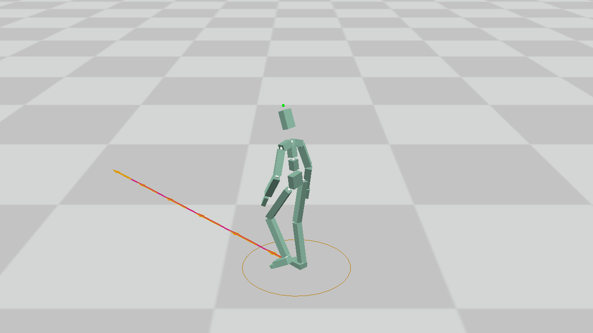
Figure 10. During the left turn the matched stride follows the arrow instead of keeping the previous heading.
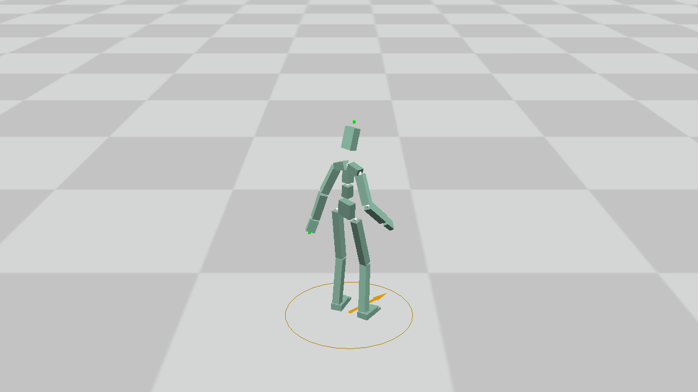
Figure 11. After the stick is released. The match stays in the long walking clip, on a frame whose future path is nearly stationary, rather than switching to the push clip.
The same rule shows up in all three parts. Captured frames are the only poses that are known to be good, so the algorithm should spend as much time as possible playing them and as little as possible inventing a pose in between.
The two videos are motion_concatenation.mp4 (the interpolated walk-to-run, then the inertialized version) and motion_matching.mp4 (forward, a left turn, forward, a right turn, and a stop).